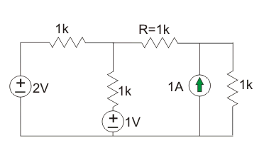
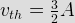
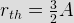
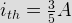
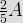
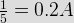
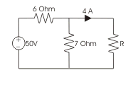
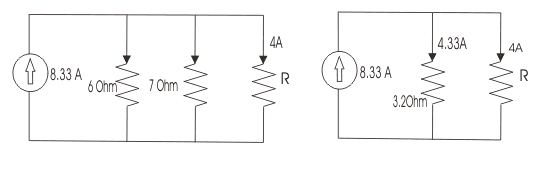

- Conductance of any conductor is expressed as
Conductance is reciprocal of resistance that means conductance = (resistance) - 1 . Hence unit of conductance will be 1/ohm and this is known as mho.
- Three element having conductance G1, G2 and G3 are connected in parallel. Their combined conductance will be
We know that conductance is reciprocal of resistance i.e. resistance = 1 / conductance . Let's resistances of the said conductors are R1, R2 and R3 hence, G1 = 1/R1, G2 = 1/R2 and G3 = 1/R3. The resistance of their parallel combination will be (1/R1 + 1/R2 + 1/R3) - 1 = (G1 + G2 + G3) - 1 . Therefore, conductance of the combination will be G1 + G2 + G3.
- Which of the following materials has highest electrical conductivity ?
Silver has highest conductivity among all other materials used as electrical conductor. Electrical conductivity measures material\'s ability to conduct an electric current. It is commonly represented by the Greek letter σ (sigma). Its SI unit is siemens per metre.
- The electrical conductivity of metal is typically of the order of (in ohm − 1m − 1)
The electrical conductivity of metal is typically of the order of 107 ohm − 1m − 1.
- Pure metal generally have
Pure metal always have high conductivity as well as high temperature coefficient. The resistance of metal greatly varies with temperature.
- Poorest conductor of electricity is
Carbon is a non metal.
- Which variety of copper has the best conductivity ?
Pure annealed copper has best conductivity.
- Which variety of copper has the best mechanical strength ?
Hard drawn copper is not annealed after the drawing process. Annealing makes the copper more flexible. Hard drawn has at least 150% more tensile strength than annealed.
- What will be the resistance if 10 resistors of 10 ohm each is connected in series
Equivalent resistance of resistors connected in series = sum of the individual resistances. Here it is 10+10+10+10+10+10+10+10+10+10 =100 Ω .
- If the three colour bands of a resistor are grey, violet & gold, what is the value of the resistor:-
The values of these colours are 8, 7 & multiplier of 0.1. Therefore the value of resistance will be 87*0.1 = 8.7 ohms.
- Which of the following may be value of resistivity of copper at absolute zero in n ohm metre
The resistivity of copper does not vanish at absolute zero. Instead, its level at absolute zero is known as the residual resistance. Copper has a residual resistance of 0.020 Ω-m.
- A circuit contains two un equal resistor in parallel
- Three resistances have the following ratings A)150 Ω at 5%,B) 100 Ω at 5%,C)200 Ω at 5% the percentage error when all the three are connected in series will be-
(150*5%+200*5%+100*5% )/450=5%
- If the length of a wire of resistance R is uniformly stretched to n times its original value, what will be its new resistance
Length of the conductor becomes n times and at the same time cross section of the conductor becomes 1/nth times. Hence resistance of the conductor becomes n2 times of its original value as length of the conductor is directly proportional and cross section is inversely proportional to the resistance.
- The resistivity of semi-conductors at room temperatures is
The resistivity of semi-conductors at room temperatures is 0.01 to 50 ohm-cm.
- Addition of 0.3% to 4.5% silicon to iron
Addition of 0.3% to 4.5% silicon to iron increases the electrical resistivity of iron.
- If the resistance of a conductor does not vary in accordance with the Ohm’s law s it is known as
- The electric current in the resistor R shown in figure will be
Applying superposition principle by 1st considering 2V & 1V source and then considering 1 amp source


Current through r,

Considering 1 amp source
Current through R,

Net electric current through R,
 - In given figure, the value of resistance R in Ω is
The given circuit can be simplified by replacing voltage source by equivalent current source as below

The electric current through 3.2 Ω resistor is 4.33 A hence voltage across it is 3.2X4.33 = 13.856 V and this is the voltage across unknown resistor R. As electric current through R is 4 A and then R = 13.856/4 = 3.47 Ω - Which of the following has positive temperature coefficient ?
Normally metallic substance has positive temperature coefficient. Gold is a metallic substance.
Design with  by SARU TECH
by SARU TECH
www.sarutech.com
Content Credited to electrical4u.com
Online Electrical Engineering Study Site